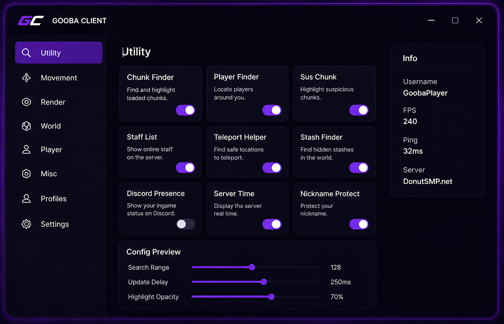

Play Minecraft.
Make it yours.
Gooba Client for DonutSMP
A focused Minecraft client built for DonutSMP on version 1.21.11.

Everything you need.
Nothing you don't.
Focused utilities, a clean interface, and room to make the experience your own.
Built for Minecraft.
Designed for you.
Gooba keeps useful information close and the interface out of your way. The preview is a CSS-built concept UI — not a claim about shipped modules.
Your workspace
Performance
Optimized configuration
Three steps.
Then you're in.
Keep the setup simple. Update these instructions if your actual release has different dependencies.
Download
Download the latest Gooba .jar directly from the configured GitHub release asset.
Install Fabric
Install the required Fabric Loader and Fabric API version for the Minecraft version you are running.
Fabric installer →Launch
Place Gooba in your Minecraft mods directory and launch Minecraft using the matching Fabric profile.
Keep your setup clean.
Know your setup.
Version details live in one configuration object so the site stays easy to maintain.
Good to know.
Answers are intentionally editable and avoid claims that aren't backed by your actual project.